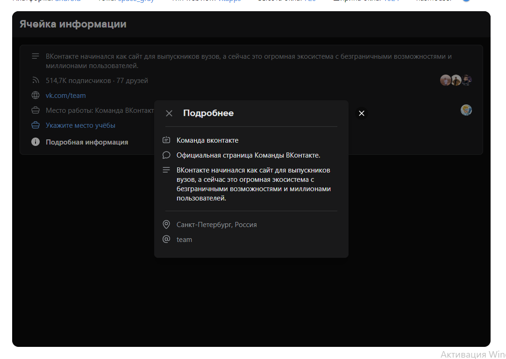
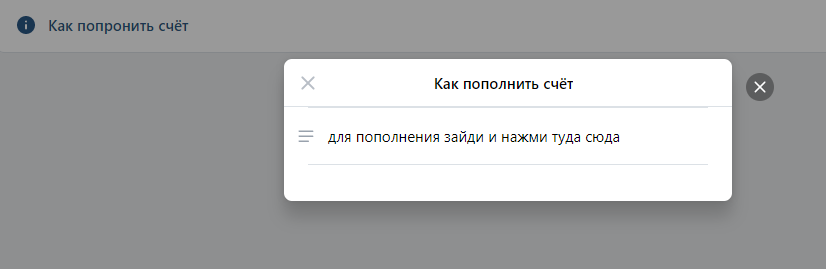
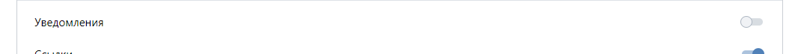
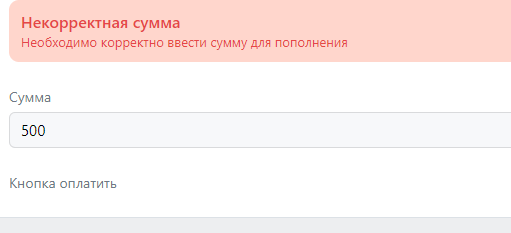
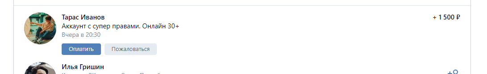
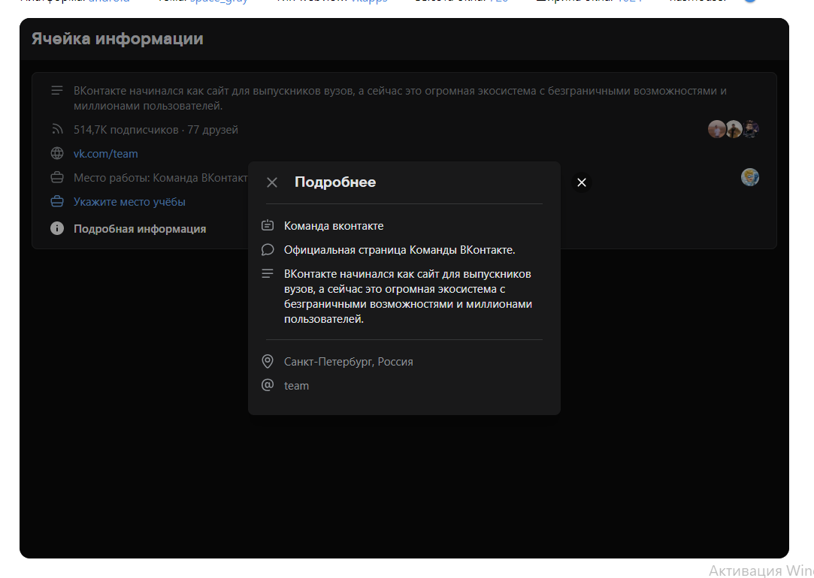
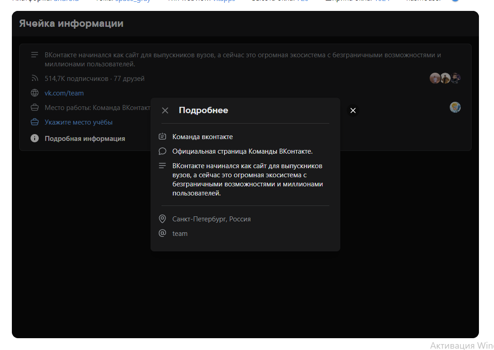

Нужно сделать платную консоль для игры на платформе ВКонтакте.
VK UI: Blocks -> MiniInfoCell
Если новый пользователь - при запуске должно открыться модельное окно, в котором будет написан приветственный текст. Ниже поле для ввода ссылки (ссылка на страницу вк или айди). Если поле пустое - будет кнопка "Пропустить". Если в поле ссылка/айди будет кнопка "Далее". Из ссылки нужно получить айди и вписать айди нового пользователя пригласившему, а пользователю айди пригласившего. Если айди пользователя есть в базе - на аккаунт нового пользователя зачисляются деньги на баланс. Далее окно закрывается.

Перелистывающиеся страницы (основные новости).
VK UI: Blocks -> Gallery
Под ними кнопки управления (желательно с иконками.).
VK UI: Blocks -> CellButton
В конце каждой кнопки иконка с вопросом. Нажав на неё откроется модельное окно с информацией.
Перелистывающиеся страницы (основные новости).
VK UI: Blocks -> CardScroll
Под ними кнопки управления (желательно с иконками.).
VK UI: Blocks -> CellButton
В конце каждой кнопки иконка с вопросом. Нажав на неё откроется модельное окно с информацией.
тут будут ответы на часто задаваемые вопросы. В самом низу будет кнопка задать вопрос. Нажав открывается модельное окно с полем для ввода и кнопкой.
по нажатию открывается окно

Будут отображаться балансы (2).
VK UI: Blocks -> Counter
Сколько человек позвал пользователь. (Общее количество и последние несколько человек).
Переключатель уведомлений (чтобы на телефон могли приходить уведомления).
VK UI: Blocks -> Switch

Ниже поле для суммы и кнопки пополнения счёта. По нажатию ссылка на оплату.
VK UI: Blocks -> FormStatus

Кнопка "Стать в очередь". Рядом пишется место в очереди.
Рядом пишется место в очереди.
VK UI: Blocks -> Group
Фиксированный магазин. Будет несколько переключателей и вопросик, что за, что отвечает по нажатию модельное окно.
VK UI: Blocks -> Switch
Ниже counter для выбора количества серверов. Ниже поле с ценой и рядом поле отображающее скидку в рублях. В самом низу кнопка для оплаты..
Далее пользовательский магазин. Товары с базы данных. Название, описание, цена. Кнопка для оплаты.

VK UI: Blocks -> RichCell
Информация о количестве оплаченных серверов. (Как баланс)
!Вверху будет форма с сервером (из базы). Три точки на другой символ поменять (Для подключения). Если не оплачено - айпи скрыть *
VK UI: Blocks -> Group
Ниже форма консоли.
Поле для ввода айпи и порта. Ниже переключатель, поле для ввода команды и значок отправить (или кнопка Enter для этой и всей консоли ниже). Ниже должно быть поле с ответом сервера.
Добавить сервер. Будет 3 поля для ввода айпи, порта и пароля. Ниже кнопка "Добавить"..
Пополнения, отправка команд и тд.
VK UI: Blocks -> Footer
(Доступны у пользователя с соответствующей отметкой в базе).
Вверху поле для поиска (Имя, фамилия и айди).
VK UI: Blocks -> Search
Список идёт сверху вниз. Отображается аватарка, имя и фамилия. Под именем и фамилией будет ссылка на профиль (переход на страницу по нажатию).
VK UI: Blocks -> PullToRefresh
Рядом кнопка действий. Открывает модельное окно в котором видны балансы пользователя. И кнопки действий: Заблокировать/разблокировать, выдать/ забрать деньги со счёта
 
